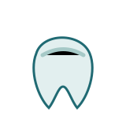

Reúne dudas, antecedentes relevantes y confirma si necesitas estudios previos.
VALORACIÓN · PREVENCIÓN · SEGUIMIENTO
Una ruta simple para entender tu próxima visita dental.
Presenta tratamientos, preparación de la primera consulta y preguntas frecuentes con un tono responsable y sin promesas clínicas.
Concepto demostrativo; no sustituye valoración profesional.
Valoración inicial
Prevención
Tratamientos
Preguntas claras

Estado: draft. Nombre e identidad ficticios utilizados exclusivamente con fines demostrativos. No está aprobado para catálogo público ni portafolio principal.
Dental
Servicios y contenido representado.
La arquitectura prioriza confianza: primero explica el alcance, después prepara la consulta y finalmente facilita contacto.
- Valoración inicial
- Limpieza dental
- Prevención
- Resinas sujetas a valoración
- Blanqueamiento sujeto a valoración
- Ortodoncia informativa
- Revisión infantil sujeta a confirmación
- Seguimiento
Orientador dental
Orientador dental
Elige un tema para saber qué información preparar antes de escribir.
Primera valoración
Comparte motivo de consulta, disponibilidad y si ya tienes estudios recientes.
Primera consulta
Una ruta fácil de seguir.
La clínica explicaría opciones y alcance después de revisar el caso.
El seguimiento se comunica con indicaciones aprobadas por el equipo profesional.
Preguntas frecuentes
Condiciones claras antes de publicar.
¿La página diagnostica?
No. Evita diagnósticos y clasificaciones clínicas automáticas.
¿Se pueden mostrar precios?
Sí, solo si la clínica los aprueba y mantiene actualizados.
¿Incluye reservación?
No en el alcance base representado; puede cotizarse como integración.
Contacto
Datos reales por configurar con el negocio.
Esta demo no inventa teléfono, correo, dirección ni mapa. En un proyecto publicado se cargarían los canales aprobados por el cliente.
- WhatsApp del negocio: por configurar.
- Horario: por confirmar.
- Zona de atención: por definir.
- Redes sociales: solo si el cliente las autoriza.
NEXO26 DIGITAL
Una clínica dental puede explicar sin saturar ni presionar.
Este concepto organiza alcance, navegación, contenido e interacción para mostrar cómo podría verse una solución similar después de recibir materiales y aprobación.